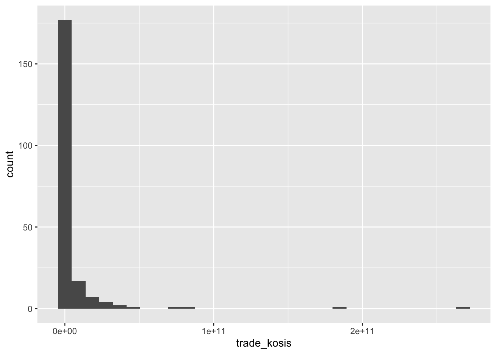
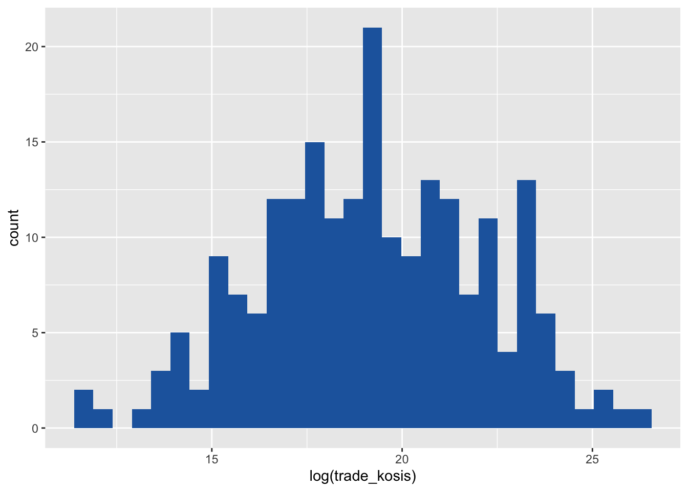
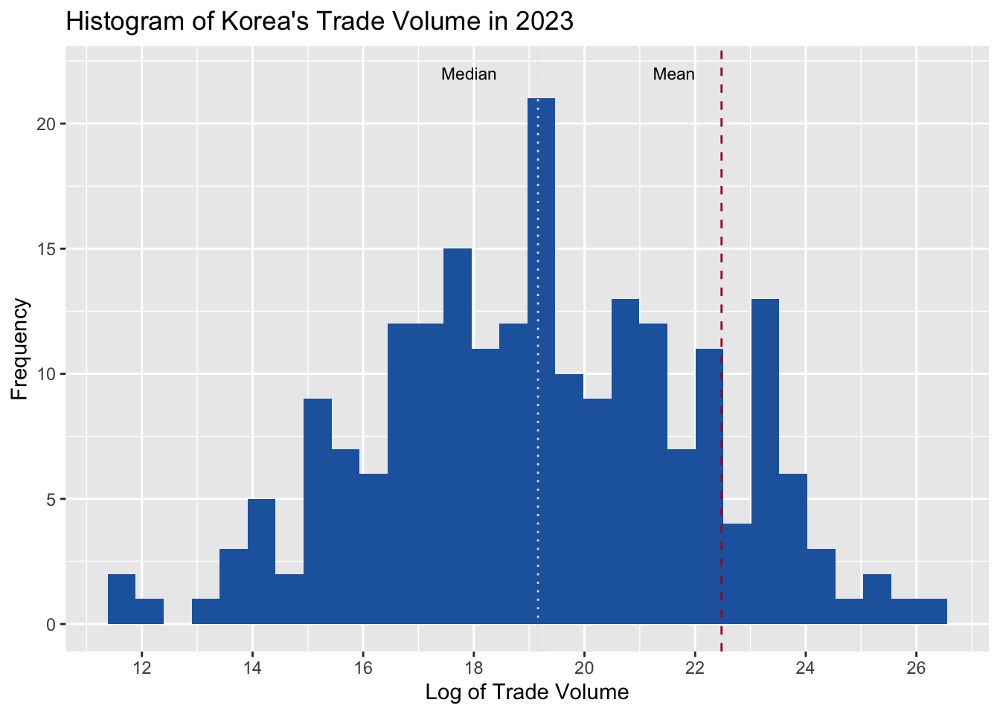
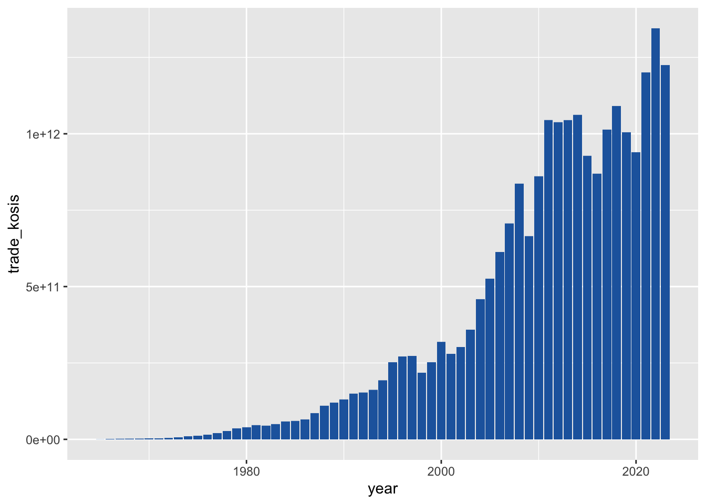
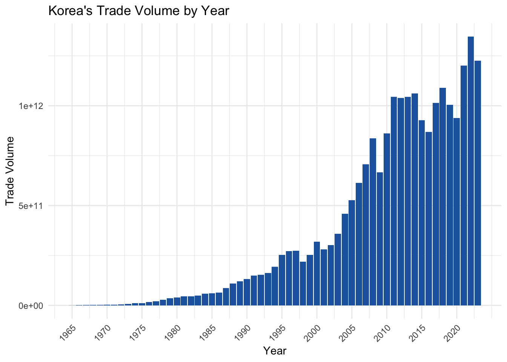
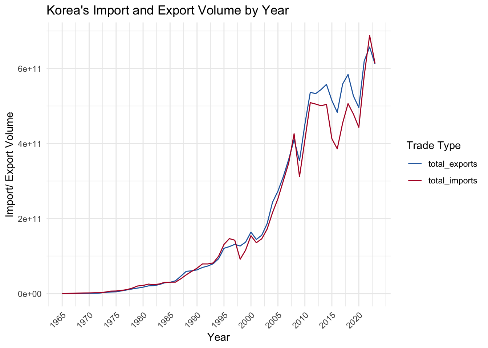
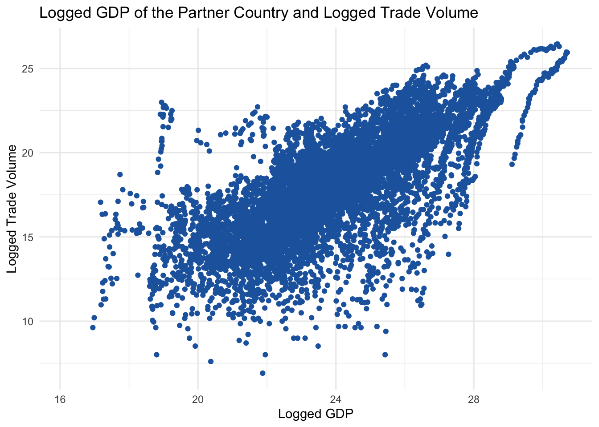
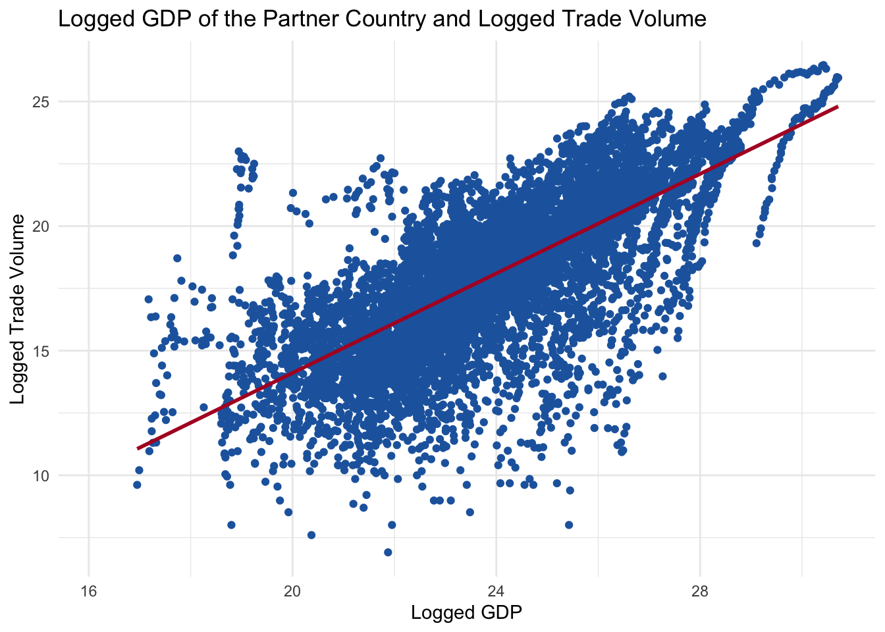
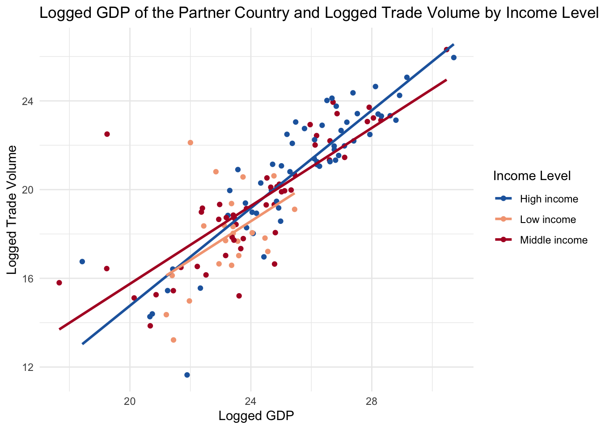

library(tidyverse) # Load the tidyverse package
# install.packages("devtools") # if you haven't installed the devtools package yet, remove the # sign.
# devtools::install_github("kjayhan/kdiplo") # if you haven't installed the kdiplo package yet, remove the # sign.
library(kdiplo) # Load the kdiplo package7 Data Visualization: Plots
[A Very Early Draft]
In this chapter, we will learn data visualization using the ggplot2 package, which is part of the tidyverse family. We will learn how to create scatter plots, line plots, bar plots, and histograms. We will also learn how to customize the appearance of these plots. Since this is a beginner’s guide, we will only cover the very basics of data visualization.
For more advanced topics, please refer to the official documentation of the ggplot2 package. You can also check out the cheat sheet for ggplot2 here. You can find other R cheat sheets here.
Before we begin, I would like to emphasize that learning how to create plots is important, but learning which plot to use when is equally important. I am not covering the latter here, but there are some great books and resources available that can help you with that, including
Data Visualization: A Practical Introduction
Modern Data Visualization with R
Friends Don’t Let Friends Make Bad Graphs
Let’s get started by loading the tidyverse package, which automatically loads the ggplot2 package.
We will work with the Korean trade data, and some additional data, which we have already cleaned and prepared in the previous chapter. I copy paste the same code here for your convenience.
trade <- kdiplo::trade_data |> # making sure that we get trade_data from the kdiplo package, and not from the environment.
select(iso3c, country, year, export_kosis, import_kosis) |> # select columns iso3c, country, year, export_kosis, and import_kosis
filter(year > 1964) |> # filter rows where year is greater than 1964
mutate(trade_kosis = export_kosis + import_kosis) # create a new column trade_kosis for Korea's trade volume, which is the sum of export_kosis and import_kosis
# install.packages("WDI") # if you haven't installed the WDI package yet, remove the # sign.
library(WDI) # load the WDI package
wdi <- WDI(country = "all", # all countries
indicator = c("gdp" = "NY.GDP.MKTP.KD", # GDP at constant 2015 US dollars
"gdp_pc" = "NY.GDP.PCAP.KD"), # GDP per capita at constant 2015 US dollars
start = 1965, # start year
end = 2024, # end year
extra = TRUE, # include extra columns included in the WDI package defaults
language = "en" # language is English
) |>
select(-iso2c, -status, -lastupdated, -capital, -lending, -longitude, -latitude, -country) |> # exclude these columns
filter(iso3c != "" | is.na(iso3c)) # exclude the rows that are missing country codes
# let's join these two datasets.
df <- trade |>
inner_join(wdi, by = c("iso3c", "year")) # join the trade and wdi datasets by iso3c and year; let's keep only the rows that have matching iso3c and year values in both datasets.
head(df) # A tibble: 6 × 10
iso3c country year export_kosis import_kosis trade_kosis gdp gdp_pc region
<chr> <chr> <dbl> <dbl> <dbl> <dbl> <dbl> <dbl> <chr>
1 ABW Aruba 1965 NA NA NA NA NA Latin …
2 ABW Aruba 1966 NA NA NA NA NA Latin …
3 ABW Aruba 1967 NA NA NA NA NA Latin …
4 ABW Aruba 1968 NA NA NA NA NA Latin …
5 ABW Aruba 1969 NA NA NA NA NA Latin …
6 ABW Aruba 1970 NA NA NA NA NA Latin …
# ℹ 1 more variable: income <chr>7.1 Histograms
A histogram is a graphical representation of the distribution of a continuous variable. It is a type of bar plot that shows the frequency of values in a dataset. The bars in a histogram are adjacent to each other, and the height of each bar represents the frequency of values in a specific range.
To create a histogram, we use the geom_histogram() function in ggplot2. Let’s create a histogram of Korea’s trade volume.
In ggplot2, we first specify the dataset and the aesthetic mappings using the ggplot() function. In geom_histogram(), we specify only the x-axis variable using the aes() function. We then add layers to the plot using the + operator. We should be careful not to use a pipe (|> or %>%) instead of + operator within ggplot() calls. In this case, we specify the x-axis variable using the aes() function and add the geom_histogram() layer to create the histogram.
# Create a histogram of Korea's trade volume
df |>
filter(year == 2023) |> # filter rows to include only the year 2023
ggplot(aes(x = trade_kosis)) + # specify the x-axis variable
geom_histogram() # create a histogram
This is not very useful as a histogram because of the skewed distribution of the trade volume. We can improve the appearance of the histogram by using log transformation.
# Create a histogram of Korea's trade volume with log transformation and assign it to an object
hist1 <- df |>
filter(year == 2023) |> # filter rows to include only the year 2023
ggplot(aes(x = log(trade_kosis))) + # specify the x-axis variable with log transformation
geom_histogram(# you can specify the number of bins using the bins argument, e.g., bins = 20
fill = "#2166ac") # create a histogram with blue bars; you can change the color by specifying a different color code, or you can simply use the default color by not specifying the fill argument.
hist1 # print the histogram
This is more informative than the previous histogram. This time let’s add a vertical line to the histogram to show the mean and median of trade volume. We need to remember to use na.rm = TRUE in the mean() and median() functions to remove missing values from the calculation. Otherwise, the functions will return NA.
We can draw these vertical lines by adding the geom_vline() layer to the plot. We can also change the color of the line using the color arguments in the geom_vline() function.
# since we are going to use the same histogram object, we can add layers to it. Let's call it hist2.
hist2 <- hist1 +
geom_vline(aes(xintercept = log(mean(trade_kosis, na.rm = TRUE))), color = "#b2182b", linetype = "dashed") + # add a vertical line for the mean of trade volume
geom_vline(aes(xintercept = log(median(trade_kosis, na.rm = TRUE))), color = "#fddbc7", linetype = "dotted") # add a vertical line for the median of trade volume
hist2 # print the histogramThe dashed line represents the mean of the trade volume, and the dotted line represents the median of the trade volume. The mean is greater than the median, which indicates that the distribution is right-skewed, with most values concentrated around the median, which is 17.9179225 (formula = log(median(df$trade_kosis, na.rm = TRUE))), which corresponds to 6.0486^{7} (formula = exp(log(median(df$trade_kosis, na.rm = TRUE)))) in the original scale. exp() is the inverse of log().
We can add a title, x-axis label, and y-axis label to the histogram using the labs() function. We can change the breaks and labels of the x-axis using the scale_x_continuous() function. We can also add annotations to the plot using the annotate() function.
# Add a title, x-axis label, and y-axis label to the histogram
hist3 <- hist2 +
labs(title = "Histogram of Korea's Trade Volume in 2023", x = "Log of Trade Volume", y = "Frequency") + # add a title, x-axis label, and y-axis label
scale_x_continuous(breaks = seq(0, 30, 2)) + # change the breaks of the x-axis
annotate("text", x = log(median(df$trade_kosis, na.rm = TRUE)), y = 22, label = "Median", color = "black", size = 3) + # add an annotation for the median
annotate("text", x = log(mean(df$trade_kosis, na.rm = TRUE)), y = 22, label = "Mean", color = "black", size = 3) # add an annotation for the mean
hist3 # print the histogram
This histogram is now more informative and visually appealing. We can also change the theme of the plot using the theme_minimal() function. For other themes, you can check out ggtthemes package as well as many others out there.
# Change the theme of the histogram
hist3 +
theme_minimal() # change the theme of the plot to minimal; you can also use other themes such as theme_light(), theme_dark(), and theme_bw(). # theme_light() # change the theme of the plot to light
# theme_dark() # change the theme of the plot to dark
# theme_bw() # change the theme of the plot to black and white7.2 Bar Plots
A bar plot is a graphical representation of the distribution of a categorical variable. It is a type of plot that shows the frequency of categories in a dataset. The bars in a bar plot are separated from each other, and the height of each bar represents the frequency of categories.
To create a bar plot, we use the geom_bar() function in ggplot2. Let’s create a bar plot of Korea’s trade volume by year.
# Create a bar plot of Korea's trade volume by year
bar1 <- df |>
ggplot(aes(x = year, y = trade_kosis)) + # specify the x-axis and y-axis variables
geom_col(fill = "#2166ac") # create a bar plot with the actual values of trade volume
# geom_col() is an alias for geom_bar(stat = "identity"), which is used when the y-axis variable represents the actual values of the data, not the frequency of the data.
bar1 # print the bar plot
Let’s customize the appearance by adding a title, x-axis label, and y-axis label, and changing the theme of the plot, and changing the scale of the x-axis.
# Customize the appearance of the bar plot
bar2 <- bar1 +
labs(title = "Korea's Trade Volume by Year", x = "Year", y = "Trade Volume") + # add a title, x-axis label, and y-axis label
scale_x_continuous(breaks = seq(1965, 2023, 5)) + # change the breaks of the x-axis
theme_minimal() + # change the theme of the plot to minimal. Be careful here, if this theme_minimal() is the last layer, another change to theme which we make in the next line will not be applied.
theme(axis.text.x = element_text(angle = 45, hjust = 1)) # change the angle and justification of the x-axis text
bar2 # print the bar plot
This bar plot is now more informative and visually appealing.
7.3 Line Plots
A line plot is a graphical representation of the relationship between two continuous variables. It is a type of plot that shows the trend of a variable over time or another continuous variable. The lines in a line plot are connected, and the slope of each line represents the relationship between the variables.
To create a line plot, we use the geom_line() function in ggplot2. Let’s create a line plot of Korea’s total exports and total imports by year. Let’s first group the data by year and calculate the total exports and total imports for each year.
# Group the data by year and calculate the total exports and total imports for each year
df_year <- df |>
group_by(year) |> # group the data by year
summarise(total_exports = sum(export_kosis, na.rm = TRUE),
total_imports = sum(import_kosis, na.rm = TRUE)) # calculate the total exports and total imports for each yearNow let’s put imports and exports volume amounts into the same column, using the pivot_longer() function, which we learned in the previous chapter.
# Put imports and exports volume amounts into the same column
df_year <- df_year |>
pivot_longer(cols = c(total_exports, total_imports), names_to = "type", values_to = "volume") # put imports and exports volume amounts into the same column# Create a line plot of Korea's exports and imports by year
line1 <- df_year |>
ggplot(aes(x = year, y = volume, color = type)) + # specify the x-axis variable
geom_line() + # create a line plot for exports
scale_color_manual(values = c("#2166ac", "#b2182b")) + # change the colors of the lines
scale_x_continuous(breaks = seq(1965, 2023, 5)) + # change the breaks of the x-axis
labs(title = "Korea's Import and Export Volume by Year", x = "Year", y = "Import/ Export Volume", color = "Trade Type") + # add a title, x-axis label, and y-axis label +
theme_minimal() + # change the theme of the plot to minimal. Be careful here, if this theme_minimal() is the last layer, another change to theme which we make in the next line will not be applied.
theme(axis.text.x = element_text(angle = 45, hjust = 1)) # change the angle and justification of the x-axis text
line1 # print the line plot
This line plot shows the trend of Korea’s total exports and total imports over time. The blue line represents total exports, and the red line represents total imports.
7.4 Scatter Plots
A scatter plot is a graphical representation of the relationship between two continuous variables. It is a type of plot that shows the correlation between two variables. The points in a scatter plot are not connected, and the position of each point represents the values of the variables.
To create a scatter plot, we use the geom_point() function in ggplot2. Let’s create a scatter plot of logged GDP of Korea’s trade partner and the bilateral logged trade volume. We take logs because of skewed distributions of both data.
# Create a scatter plot of partner country's logged GDP and bilateral logged trade volume
scatter1 <- df |>
ggplot(aes(x = log(gdp), y = log(trade_kosis))) + # specify the x-axis and y-axis variables
geom_point(color = "#2166ac") + # create a scatter plot with blue points
labs(title = "Logged GDP of the Partner Country and Logged Trade Volume", x = "Logged GDP", y = "Logged Trade Volume") + # add a title, x-axis label, and y-axis label
theme_minimal() # change the theme of the plot to minimal
scatter1 # print the scatter plot
To this, we can add a linear regression line to show the relationship between the variables. We can do this by adding the geom_smooth() layer to the plot. We can also change the color of the line using the color argument in the geom_smooth() function.
# Add a linear regression line to the scatter plot
scatter2 <- scatter1 +
geom_smooth(method = "lm", se = FALSE, color = "#b2182b") # add a linear regression line without confidence intervals
scatter2 # print the scatter plot
This scatter plot shows the relationship between the logged GDP of Korea’s trade partner and the bilateral logged trade volume. The linear regression line indicates a positive relationship between the variables, as expected.
Now let’s differentiate the points by the income level of the partner country. We can do this by adding the color argument in the aes() function and specifying the income variable.
First, let’s see the categories and frequency of each category in the income variable.
# Check the categories in the income variable
table(df$income) # count the frequency of each category in the income variable
High income Low income Lower middle income Not classified
4543 1652 3127 59
Upper middle income
3134 To make the visual neat, we can group the income levels into three categories: low, middle, and high. We can do this by using the case_when() function in the mutate() function.
# Group the income levels into three categories: low, high, and not classified
df <- df |>
mutate(income2 = case_when(
income %in% c("Low income") ~ "Low income", # if the income level is "Low income", assign it to the Low category
income %in% c("Lower middle income ", "Upper middle income") ~ "Middle income", # if the income level is "Lower middle income " or "Upper middle income", assign it to the Middle income category
income %in% c("High income") ~ "High income", # if the income level is "High income", assign it to the High income category
TRUE ~ "Not Classified" # otherwise, assign it to the Not Classified category
))# Differentiate the points by the income level of the partner country
scatter3 <- df |>
filter(income2 != "Not Classified" & year == 2023) |> # filter rows to exclude the Not Classified category; for now I also filter to year 2023 to make the regression lines more visible
ggplot(aes(x = log(gdp), y = log(trade_kosis), color = income2)) + # specify the x-axis and y-axis variables and differentiate the points by the income level
geom_point() + # create a scatter plot
labs(title = "Logged GDP of the Partner Country and Logged Trade Volume by Income Level", x = "Logged GDP", y = "Logged Trade Volume", color = "Income Level") + # add a title, x-axis label, y-axis label, and color legend
geom_smooth(method = "lm", se = FALSE) + # add a linear regression line without confidence intervals
scale_color_manual(values = c("#2166ac", "#f4a582", "#b2182b")) + # change the colors of the points
theme_minimal() # change the theme of the plot to minimal
scatter3 # print the scatter plot